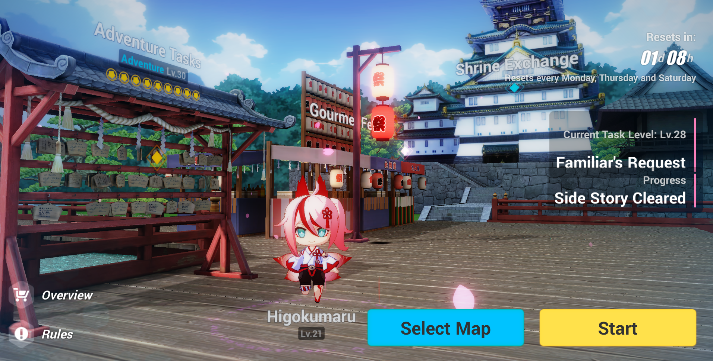
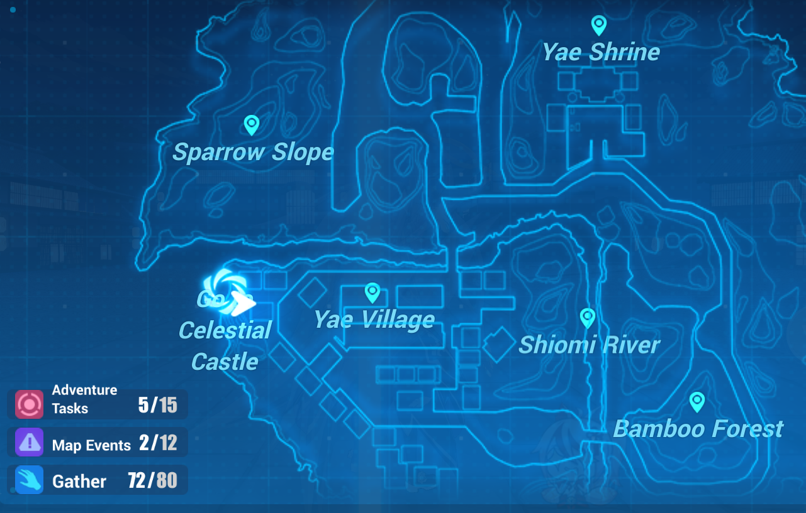

Un pequeño pueblo con flores de la Sakura a la deriva en el viento, contando la historia del Samsara de la que Miko Yae Sakura no pudo escapar. ¡Descubriendo un nuevo mundo sin fronteras, sólo esperando a ser explorado! Los capitanes no sólo experimentarán la historia del Samsara de Yae Sakura...

¡Bienvenido al Sakura Samsara!
Puedes visitar los diferentes modos de juego en la Sakura Samsara, incluyendo:
¡Bienvenido al Sakura Samsara!
El Sakura Samsara, también conocido como Mundo Abierto, es un área especial donde los Capitanes pueden luchar contra las Bestias de Honkai y cumplir misiones en un entorno de mundo abierto.
